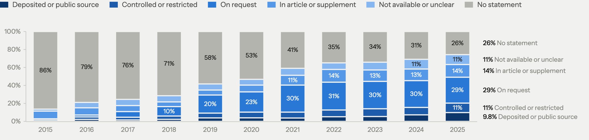

World Stroke Congress 2026 · Seoul
11 Finding 4
Data-availability statements
Write a statement
74%
2025, from 14% in 2015
Say “on request”
29%
2025, from 0.6%
Deposit or public dataset
9.8%
2025, from 0.7%
Shared when asked
6.8%
of authors, elsewhere

16,362 open-access stroke full texts, up to 1,500 a year · Gabelica 2022